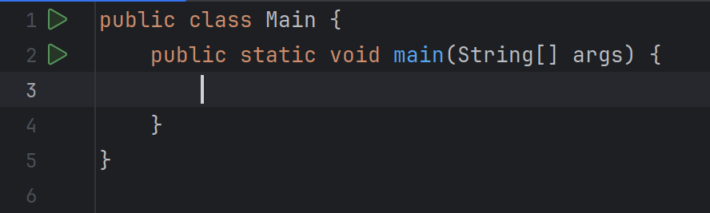

Javada istənilən proqramı yazanda aşağıdakı kodları yazmaq lazımdır.
Qeyd! Qısayol: psvm
Java proqramlaşdırma dilində 8 ədəd primitive tip mövcuddur.
| Tip | Təsviri | Bit ölçüsü | Nümunə |
|---|---|---|---|
byte |
Kiçik ədədlər üçün istifadə olunur | 8 bit | byte b = 100; |
short |
Orta ölçülü tam ədədlər üçün | 16 bit | short s = 30000; |
int |
Standart tam ədəd tipi | 32 bit | int i = 123456; |
long |
Çox böyük tam ədədlər üçün | 64 bit | long l = 123456789L; |
float |
Onluq kəstrlər üçün (dəqiqliyi az) | 32 bit | float f = 3.14f; |
double |
Onluq kəstrlər üçün (dəqiqliyi yüksək) | 64 bit | double d = 3.14159; |
char |
Simvol saxlamaq üçün istifadə olunur. Tək dırnaq (') ilə yazılır. | 16 bit | char c = 'A'; |
boolean |
True və ya false dəyərlərini saxlayır | --- | boolean b = true; |
| Tip | Təsviri | Bit ölçüsü | Nümunə |
|---|---|---|---|
String |
Mətnlər üçün nəzərdə tutulub. Qoşa dırnaq (") ilə yazılır. | Dəyişkəndir | String message = "Hello world"; |
2 formada dəyişən yaratmaq olar